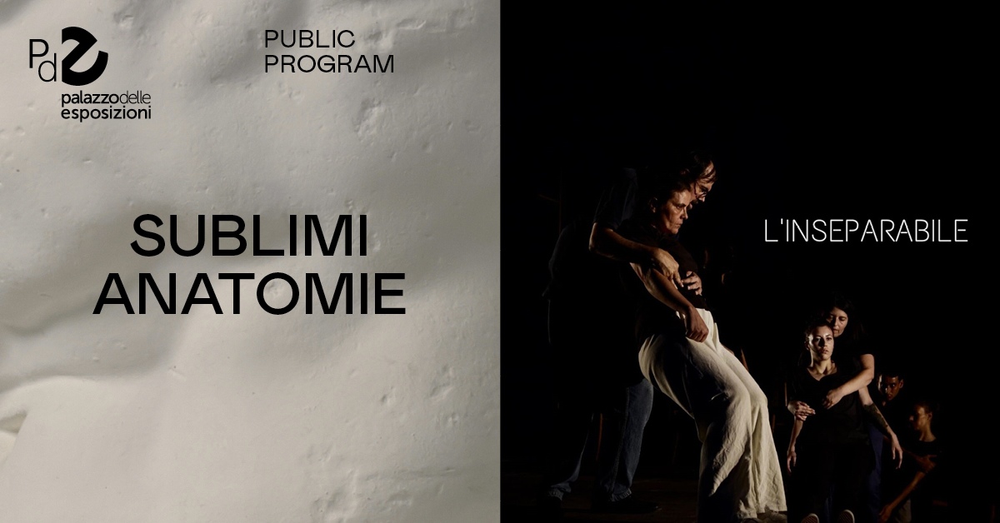
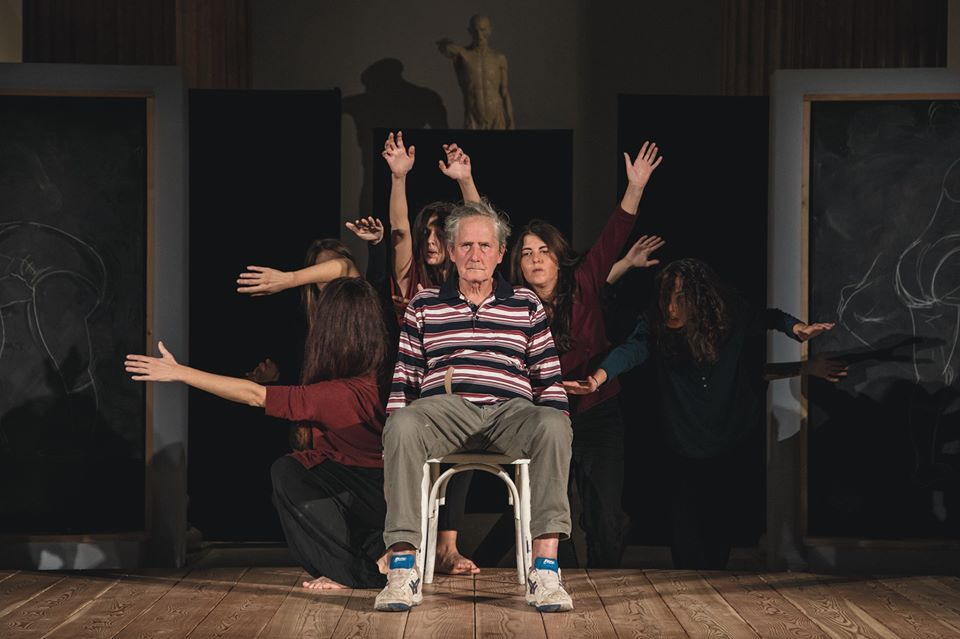
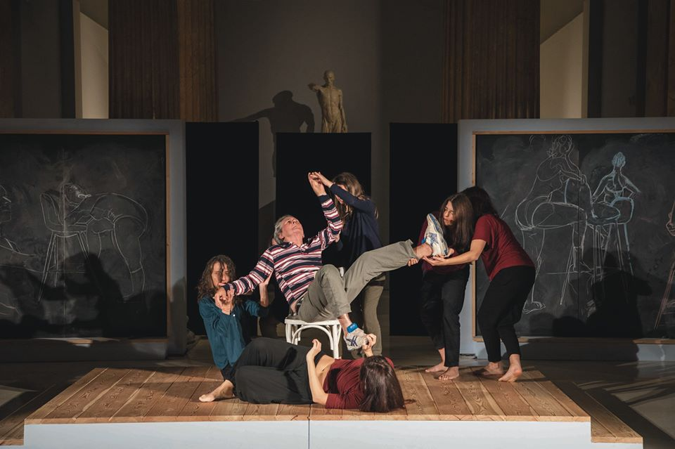
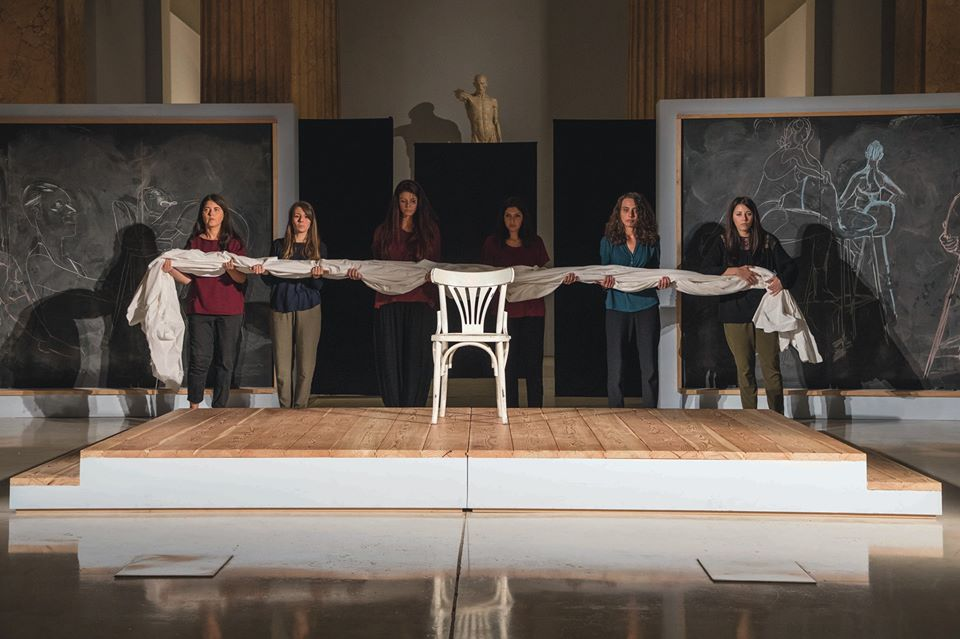

Sinossi
Con “L’inseparabile” i nontantoprecisi provano a sostare tra le fratture che danno origine alla separazione tra mondo e corpo, tra parola e cosa. Fare l’esperienza collettiva della provvisorietà dei confini, dell’estensione potenzialmente infinita dei corpi, è ciò che muove il lavoro della scena. Un corpo inseparabile, senza organi, pezzo di mondo in costitutiva relazione con la terra. L’atto di scena per provare a sospendere il corpo rappresentato e diviso, facendo emergere la torsione di un corpo che si getta nella fallimentare impresa di prodursi da sé. Attraverso un lavoro rigoroso di controllo del movimento, che affonda il gesto nella carne del corpo dato, i nontantoprecisi provano a forzare l’ordine del discorso e quindi l’ordine di questo corpo. Si danno degli appuntamenti sulla scena non progettati e non imposti da nessuno degli attori in gioco, in cui i corpi, per potersi incontrare in uno spazio e un tempo non dati, devono cedere qualcosa della propria soggettività e delle proprie decisioni. Soggetti vestiti di strade obbligate, rinunciano a parti dei propri ancoraggi per potersi comporre con il corpo dell’altro e con il corpo-mondo. Accade una cessione di sovranità a favore di una provvisoria adesione a questo mondo immanente che noi abitiamo sempre, qui ed ora, malgrado il racconto che ci vuole separati. L’inseparabile è performance con laboratorio: sezioni giornaliere di im/possibili partizioni della scena per muoversi con l’altro e con il mondo in cui i nuovi corpi sono piantati, produrre differenti forme di soggettivazione collettiva, sguardi plurimi sempre originari.


